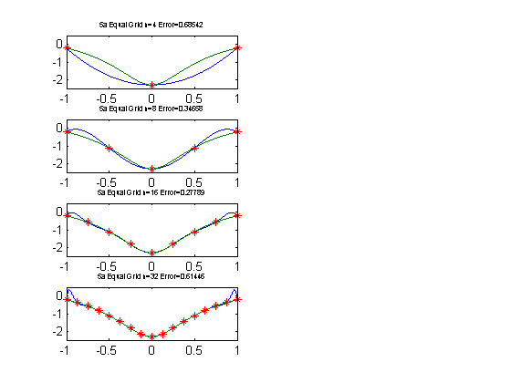

Contents
5a lagrange test script developed in class w/
slight changes
clear i=1; for n = [4,8,16,32]; nout(i)=n; % interpolate a more interesting function f = @(x) log(sin(x).^2+0.1); x = linspace(-1,1,n/2+1); % interpolation points y = f(x); % evaluation points z = linspace(-1,1,1001); % construct Lagrange weights w = lagrange_weights(x); % evaluate interpolant tic Pn = Lagrange_eval_barycentric(z,x,y,w); eltime(i)=toc; % check the error error(i)=max(abs(Pn-f(z))); figure(1) subplot(4,2,i*2-1) plot(z,Pn,z,f(z),x,y,'*'); title(['5a Equal Grid n=' num2str(n) ' Error=' num2str(error(i))],... 'FontSize',6) %xlabel('x'); %ylabel('y'); axis([-1 1 -2.5 .5]) %legend('interpolant','exact','interpolation points') % pause i=i+1; end %nRuntimeError=[nout' eltime' error']
lagrange test script developed in class w/
slight changes for problem 5b
clear j=1; for n = [4,8,16,32]; nout(j)=n; % interpolate a more interesting function f = @(x) log(sin(x).^2+0.1); for i=1:n ; % build interpolation points x(i)=cos((2*i+1)*pi/(2*(n+1))); end y = f(x); % evaluation points z = linspace(-1,1,1001); % construct Lagrange weights w = lagrange_weights(x); % evaluate interpolant tic Pn = Lagrange_eval_barycentric(z,x,y,w); eltime(j)=toc; % check the error error(j)=max(abs(Pn-f(z))); figure(1) subplot(4,2,j*2) plot(z,Pn,z,f(z),x,y,'*'); title(['5b Chebyshev n=' num2str(n) ' Error=' num2str(error(j))],... 'FontSize',6) %xlabel('x'); %ylabel('y'); axis([-1 1 -2.5 .5]) %legend('interpolant','exact','interpolation points') % pause j=j+1; end %nRuntimeError=[nout' eltime' error']